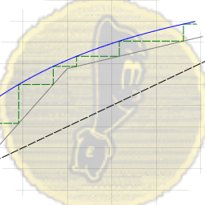

about me
I have a longtime interest in bio-work and software development. This has ranged from labwork to web design.
Check out my work and find me using the following:


Biofuels Project
Student led project to develop an algae system for producing H2 gas.
Project has ran for two years and counting, and is currently operating in a proper lab.

Distillation Grapher
Used to generate 2D plots of binary distillation systems, based on concepts from CE 407: Separations.
Special thanks to Elroy for his contributions.